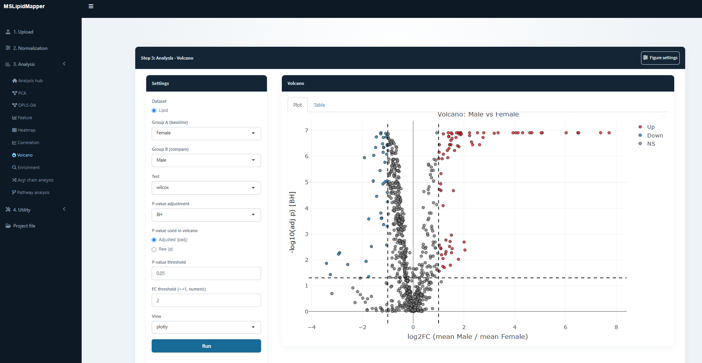

Volcano
Compare lipid fold changes and statistical significance between two groups.
Configure the comparison
Open 3. Analysis → Volcano.
- Select Lipid under Dataset.
- Set Group A (baseline) to Female and Group B (compare) to Male.
- Set Test to wilcox and P-value adjustment to BH for this example.
- Under P-value used in volcano, select Adjusted (padj).
- Set P-value threshold to
0.05and FC threshold (>=1, numeric) to2. - Set View to plotly and click Run.


Read the volcano plot
Each point represents a lipid feature. The horizontal axis is log2FC (mean Male / mean Female). Positive values indicate higher mean abundance in Male samples and negative values indicate higher mean abundance in Female samples.
The vertical axis is −log10(adjusted p) for the illustrated settings. Higher points have smaller adjusted p-values. BH denotes Benjamini–Hochberg multiple-testing correction.
The vertical dashed lines mark log₂FC values of −1 and +1, corresponding to the twofold cutoff. The horizontal dashed line marks the adjusted p-value threshold of 0.05. Red Up points and blue Down points meet the selected significance and fold-change criteria. Gray NS points fail at least one criterion.
Inspect individual results
Use the interactive plot to inspect points, and open the Table tab to review feature-level results. Use Figure settings to adjust the plot appearance.